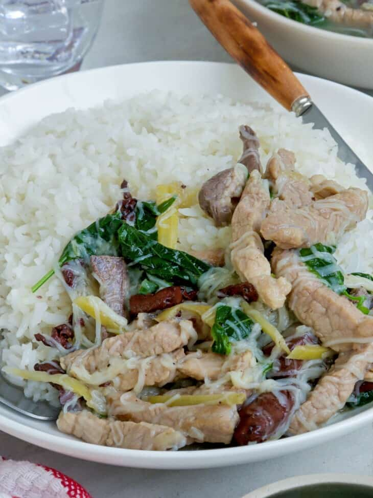

Batchoy Tagalog makes a great main dish with steamed rice for lunch or dinner.
It's a hearty, flavorful comfort food that's sure to take the chill off cold, rainy days.

In a large pot over medium heat, heat oil. Add onions, garlic, and ginger, and cook until softened.
Add pork and heart. Cook, stirring occasionally, until lightly browned.
Add fish sauce and cook for about 2 to 3 minutes.
Add water and bring to a boil, skimming scum that floats on top.
Lower heat, cover, and continue to cook for about 15 to 20 minutes or until meat is tender.
Increase heat to high and bring the broth to a rolling boil.
Add pork liver and cook, without stirring, for about 2 to 3 minutes.
Stir and continue to cook for another 2 to 3 minutes.
Add coagulated blood and cook, without stirring, for about 2 to 3 minutes.
Stir and continue to cook for about 8 to 10 minutes.
Season with salt and pepper to taste.
Add miswa and continue to cook for 1 to 2 minutes.
Add chili leaves, pressing down into the broth.
Turn off the heat and cover to allow residual steam to cook leaves.
Serve hot.